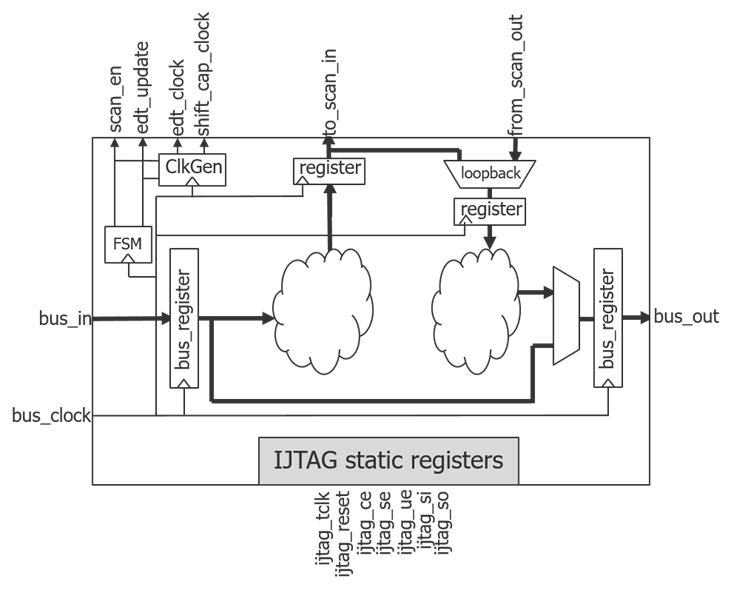
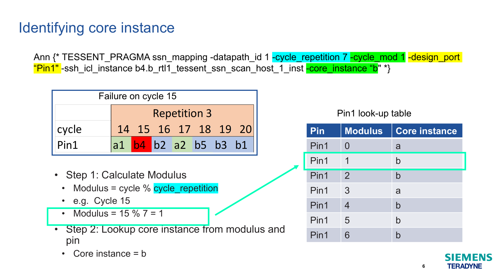
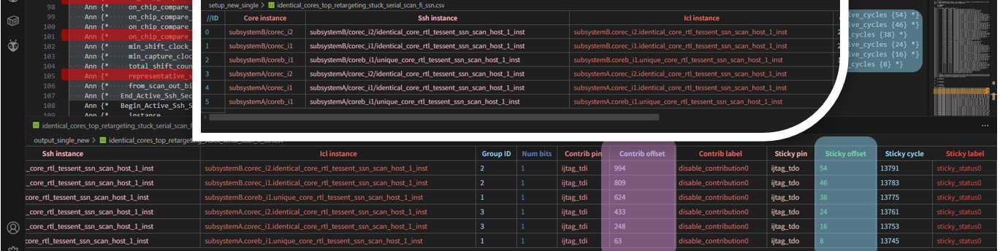

SSN Slang Glossary
To address the traditional SCAN technology's sustainability pain points, SSN has created a lot of new concepts that does not exist before and a lot of acronyms along with them. The purpose of this cheat sheet is supposed to help users who are new to SSN to understand the slang that we speak.
Platform agnostic terms
Accumulated Status
- refer to On-Chip Compare
- Per-shift pass/fail status bits accumulated across all
ssh_icl_instancesof the samecapture_global_group
capture_global_group
- refer to representative_ssh
ssh_icl_instancesthat share the samecapture_global_groupID appear as only onessh_icl_instanceon the ssn bus.
Contribution Bits (disable_contribution_bit)
- A RW bit, if asserted (set to 1), that can prevent a
ssh_icl_instance's On-Chip compare logic to modify(contribute) theAccumulated Statusslots. - refer to On-Chip Compare.
core_instance
- A core is often a function IP with established
EDTnetworks. - It can be assigned with one ssh instance or multiple if the core is too complex.
- you can consider a
core instanceas a group ofssh_icl_instances, note that the group may only contains onessh_icl_instance. - when testing, core instance need to be tested as a minimum unit. which means all
ssh_icl_instancesof a givencore instanceneed to be enabled.
EDT
- Embedded Deterministic Test

ICL (icl)
- Instrument Connectivity Language
iJTAG
- IEEE 1687
On-Chip Clock (OCC)
- this is to highlight that
OCCis typically referring to On Chip Clock, while On-Chip Compare usesOCComp
On-Chip Compare (OCComp)
- A ssh takes its scan in data as well as scan out data (expected and masked) from predictable preallocated
time sloton the ssn bus and offload the mis-compares on a dedicated region on the preallocatedtime slotcalledaccumulated statuszone.

- Per-shift pass/fail status bits accumulated across
ssh_icl_instances(SSN stream) - Sticky pass/fail status bit per
ssh_icl_instances(IJTAG)

- refer to Sticky Bits
representative_ssh
- when multiple identical
ssh_icl_instancesare tested simultaneously as a group, they can share the same scan in data & scan out expected/mask data. In that case, only one copy of the data is present on the ssn bus and one bucket oftime slotswill be allocated. Siemens use the first appearedssh_icl_instancein that group as therepresentative ssh, whose name will appear in the pin/cycle-to-ssh mapping section, and for the following appearedssh_icl_instancesthey will have an attribute that points to the first ssh, namelyrepresentative ssh. representative sshrepresent a group ofssh_icl_instancesthat share the samecapture_global_groupID with it.- User can't tell if a
ssh_icl_instancefrom the mapping section is arepresentative_sshor not. - User need to parse the
Active Ssh Sectionto get that information.
SMux
- A Multiplexer on the ssn Bus
SSH (ssh)
- Streaming Scan Host 
ssh_icl_instance
- an instance of an ssh, accessed via iJTAG with a unique icl address.
- in most cases the term
ssh instanceandicl instanceare interchangeable, so it may be referred to asssh_icl_instancein the mapping section of a pattern(stil) file.
SSN
- Streaming Scan Network
Sticky Bits (sticky_bit)
- A RO bit, if asserted (set to 1), that marks the failure status of a
ssh_icl_instance's On-Chip compare logic since last reset. ( a reset is typically done inssn_setuporssn_end) - refer to On-Chip Compare

Tester Compare (TC)
- A ssh takes its scan in data from predictable preallocated
time sloton the ssn bus and offload the EDT's scan out data on the sametime slot.

- each
time sloton the ssn bus out will map to assh_icl_instance(or a group of identicalssh_icl_instancethat share the samerepresentative ssh)

- tester will compare the scan out against the expected and any mis-compare will map to the
ssh_icl_instance, thus one will know whichssh_icl_instancefailed and whichcore instancefailed.
Pattern Related
ssn_setup pattern
- the pattern for setting up the ssn bus and active ssh instances
- it configs all the disable_contribution_bit of active ssh instances
- only the JTAG port is active, the ssn bus is in idle state
ssn_payload pattern
- the pattern that contains all the streaming scan data
- the scan blocks are packed back-to-back without parallel vectors in between
- JTAG and other control pins are in idle state.
- this type of pattern should contain an attribute called
atpg_scan_network, it's a reference pointing to the ssn_mapfile.csv
ssn_end pattern
- the pattern for resetting the ssn bus and active ssh instances
- it also collect the status of all sticky_bits
- only the JTAG port is active, the ssn bus is in idle state
*_ssn.csv
- a file that is generated along with the ssn_setup pattern or the ssn_end pattern
- contains the extracted active ssh instances information
- the content is subject to change due to the evolution of ssn
- IG-XL currently(as of 11.0) do NOT parse the file, a code lib provided by Factory Apps will read and parse the file. 
*_ssn_mapfile.csv
- a file that is generated along with the ssn_payload pattern.
- contains the information of pin/cycle-to-core(ssh) mapping
- the content is subject to change due to the evolution of ssn
- IG-XL will parse and load the file while loading the payload pattern.

cycle_repetition
- fitting a N bit streaming packet data on a M bit wide bus will result in the mapping pattern to repeat every R cycle, where R = LCM(M, N) / M
- LCM: Least Common Multiple
- it means every R cycles the pin/cycle-to-core(ssh) mapping relation repeats.
- for each scan out pin, the cycle-to-core(ssh) mapping repeats every R cycles
- we call the R cycle_repetition
- refer to cycle_modulo

cycle_modulo
- refer to cycle_repetition
- with the mapping being cycling, a given modulo number on a given pin will constantly map to a fixed core
- the mapping table is constructed with 4 columns being:
- pin
- cycle_repetition
- cycle_modulo
- core/ssh-icl instance
rotation
- fitting a N bit streaming packet data on a M bit wide bus will result in the mapping pattern to repeat every R cycle, where R = LCM(M, N) / M
- LCM: Least Common Multiple
- sometimes user would patch the streaming data so that N is integer multiple of M, this is called rotation = off
- the most efficient way is to disable patching, which is called rotation = on
- refer to cycle_repetition
- refer to cycle_modulo

prime_scan_mask (opcode)
- a opCode that is needed for masking core/ssh-icl instance.
- refer to prime_scan_mask, prime_no_scan_mask